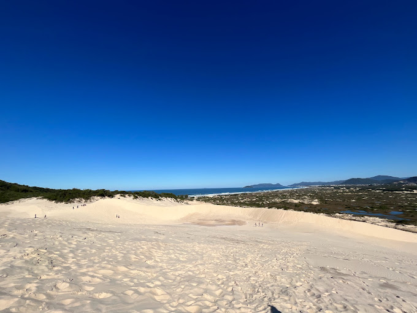

destino popular na região de Florianópolis é a Praia da Joaquina e suas maravilhosas dunas. Você ainda não ouviu falar? Então é hora de conhecer um pouco mais sobre esse local e se apaixonar pelas belezas e pelos atrativos das dunas da Joaquina. A Praia da Joaquina reúne o que há de melhor para se aproveitar alguns dias de férias, incluindo infraestrutura, lazer e paisagens maravilhosas. É, ainda, de fácil acesso e garante conforto para os turistas. Gostou do assunto? Parece interessante? Então, continue lendo para descobrir: A estrutura da Praia e das dunas da Joaquina A beleza das dunas da Joaquina O acesso às dunas da Joaquina …. Tudo isso e muito mais!
O mercado público é ponto certo nas idas a Florianópolis. Gosto de tudo, dos belos frutos do mar, dos barzinhos, frutas da estação, salaminhos, queijos e toda diversidade de produtos que podemos encontrar neste local. Além de ser um movimentado centro de comércio, o Mercado Público de Florianópolis é um ponto de encontro, tanto para os moradores quanto para os turistas. Talvez seja por isso que é considerado um dos espaços mais democráticos da Ilha, pois reúne em um só lugar artistas, políticos, boêmios, empresários e gente do povo, sem distinções. Nos bares e restaurantes é possível degustar diversos pratos da gastronomia local, com destaque para o pastel de berbigão e as porções de camarão e de peixe frito, todos sempre bem acompanhados de um chope super gelado.
.jpeg) O Palácio Cruz e Sousa, antigo Palácio Rosado, é a sede do Museu Histórico de Santa Catarina (MHSC) desde 1986,
e está localizado no Centro de Florianópolis, no estado de Santa Catarina, em frente à principal praça da cidade, a
Praça XV de Novembro, tendo servido como Palácio do Governo do Estado.[2]
A história
Em meados do século XVIII, época em que foi criada a Capitania de Santa Catarina e nomeado seu primeiro governador,
o brigadeiro José da Silva Paes, foi também construído junto à praça da Vila de Desterro um prédio de três seções e
dois pavimentos para ser a nova "Casa de Governo".[2] Durante mais de um século, o palácio passou por diversas
modificações, até que na mudança republicana uma grande reforma (1894–1898) foi realizada, adquirindo as
características arquitetônicas preservadas até o presente.
O Palácio Cruz e Sousa, antigo Palácio Rosado, é a sede do Museu Histórico de Santa Catarina (MHSC) desde 1986,
e está localizado no Centro de Florianópolis, no estado de Santa Catarina, em frente à principal praça da cidade, a
Praça XV de Novembro, tendo servido como Palácio do Governo do Estado.[2]
A história
Em meados do século XVIII, época em que foi criada a Capitania de Santa Catarina e nomeado seu primeiro governador,
o brigadeiro José da Silva Paes, foi também construído junto à praça da Vila de Desterro um prédio de três seções e
dois pavimentos para ser a nova "Casa de Governo".[2] Durante mais de um século, o palácio passou por diversas
modificações, até que na mudança republicana uma grande reforma (1894–1898) foi realizada, adquirindo as
características arquitetônicas preservadas até o presente.